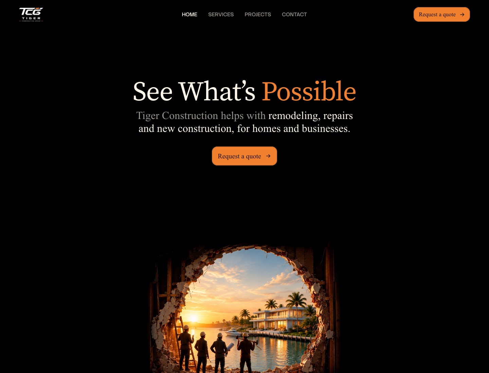

Get your product audited. For free
vorten
Recent work
Raw files
Insights
Product audit
Careers
See our work
Start
a
project
Recent work
Raw files
Insights
Product audit
Careers
See our work
Start a project
Built here
Digital products and brand systems
built with founders bringing the idea.
Construction
B2C

Tiger Construction